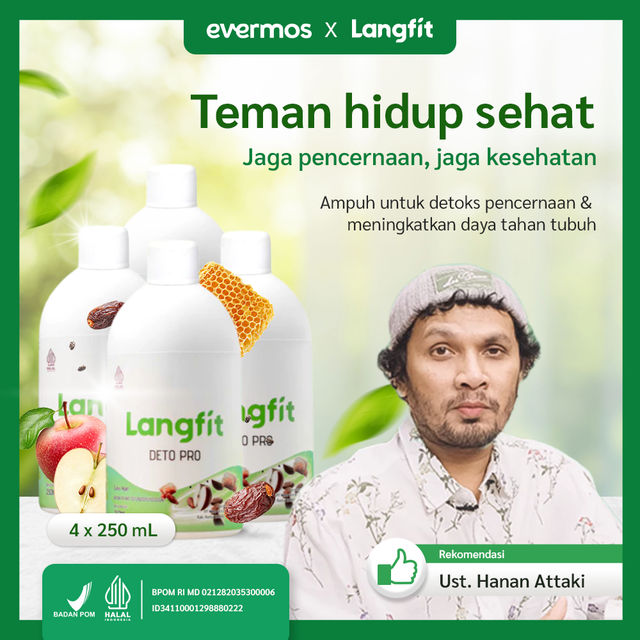

Kesehatan dasar
Tidur, makan, minum, bergerak, dan istirahat adalah fondasi kebiasaan sehat.
VitaNusa AI
VitaNusa AI menggabungkan VitaCheck, artikel kesehatan berbasis HTML, arsip PDF, katalog produk, video AI, FAQ amanah, dan tombol WhatsApp.
VitaCheck
Jawab pertanyaan sederhana. Hasilnya edukasi umum, bukan diagnosis medis.
Edukasi
Tidur, makan, minum, bergerak, dan istirahat adalah fondasi kebiasaan sehat.
Kenali sinyal tubuh dan jangan abaikan keluhan yang menetap.
Waspadai klaim pasti sembuh, 100% aman, atau hasil instan.
Produk
Katalog reseller. Informasi mengikuti label resmi dan kanal produk terkait.

Ditampilkan sebagai katalog informasi VitaNusa AI.
Produk bukan pengganti konsultasi medis dan tidak menjanjikan kesembuhan.
Tanya KEY Propolis
Ditampilkan sebagai katalog informasi VitaNusa AI.
Hasil penggunaan dapat berbeda. Hindari klaim berlebihan.
Tanya Langfit Deto ProVideo AI
Video AI digunakan untuk menjelaskan, bukan memalsukan testimoni, avatar dokter palsu, atau klaim penyembuhan.
Blog
Artikel kini bisa dibaca langsung sebagai halaman blog online, sementara PDF tetap tersedia sebagai arsip unduhan.
Video cerdas membantu masyarakat memahami manfaat, batas klaim, aturan pakai, dan cara membaca informasi kesehatan secara etis.
Membangun gaya hidup seimbang dengan ilmu, ikhtiar, kebiasaan kecil, dan pilihan produk yang bijak tanpa klaim berlebihan.
Artikel bersifat edukatif dan tidak menggantikan dokter, apoteker, ahli gizi, atau tenaga kesehatan profesional.
FAQ Amanah
Tidak. VitaCheck hanya alat edukasi kebiasaan sehat.
Produk ditampilkan sebagai katalog reseller. Klaim mengikuti label resmi dan data terkait.
Bila keluhan berat, menetap, sedang hamil/menyusui, memiliki penyakit tertentu, atau memakai obat rutin.
Kontak / WhatsApp
Untuk produk, artikel, video AI, dan kerja sama konten edukatif.